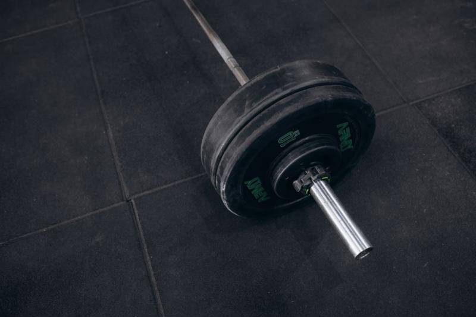
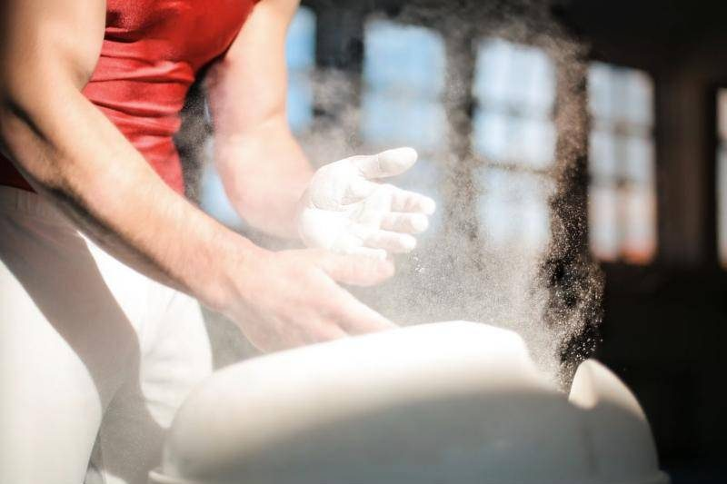
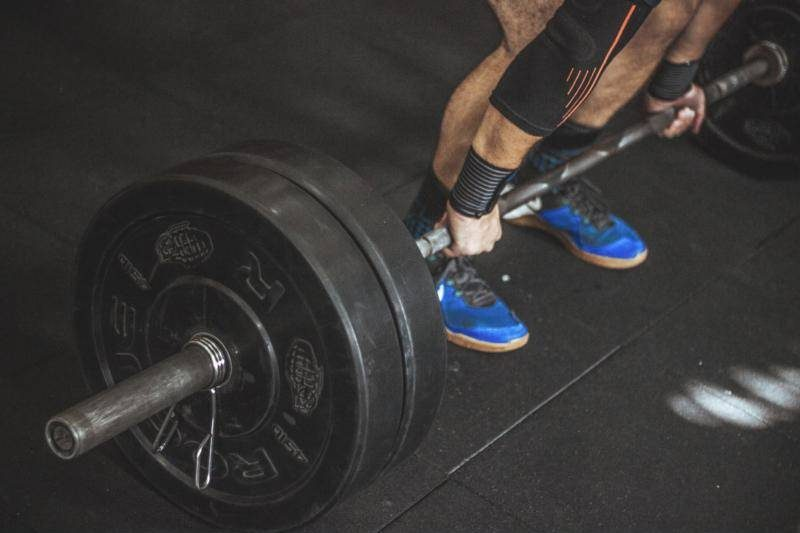
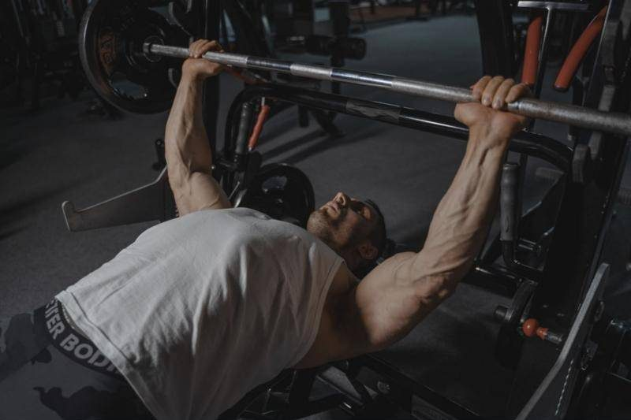
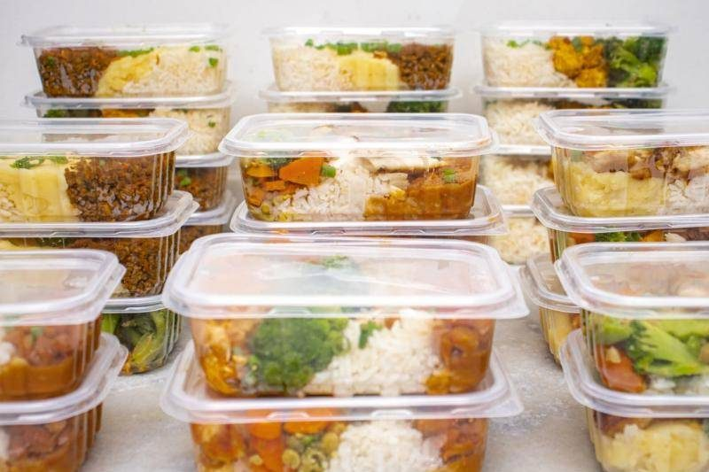
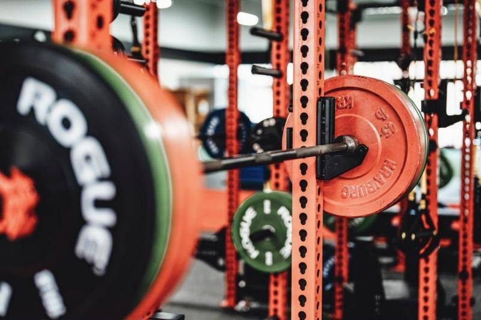
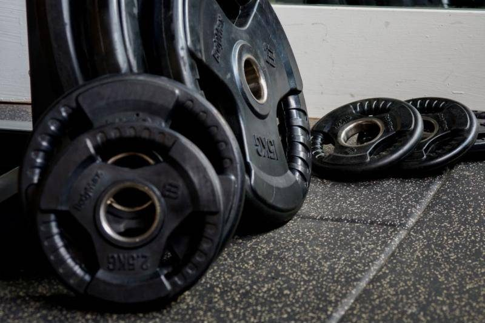

Home
Lifting is strength training with free weights: barbells, dumbbells, and plates. You pick up something heavy, put it down, and come back next time ready to lift a little more. It's a simple idea, but getting good at it takes years.

Photo by Jonathan Borba on Pexels.
The foundation of most programs is the compound lifts. These movements work several muscle groups at once:
- Bench press builds the chest, shoulders, and triceps
- Squat builds the quads, glutes, and core
- Deadlift builds the back, glutes, and hamstrings
- Overhead press builds the shoulders and upper back
- Rows and pull-ups build the lats and give the back its width
On this site you'll find how I got into lifting, why I keep doing it, how I train and eat, and what I'm working toward. Use the menu above to move between sections.
My Story
I'm Aaron Reyes, a Computer Science student at UNC Charlotte, and I started lifting in February 2023. Like most beginners, I didn't really know what I was doing. I copied what other people in the gym did and hoped it worked.

Photo by Andrea Piacquadio on Pexels.
Over time I learned that the people making real progress weren't doing anything secret. They showed up, followed a plan, tracked their numbers, and ate enough to grow. Once I started treating lifting like a skill to practice instead of a workout to survive, my strength started climbing.
Today I train every day of the week and plan my nutrition just as carefully as my workouts. Lifting has gone from something I tried to part of who I am.
Why I Lift
People start lifting for different reasons. For me it started with wanting to look and feel stronger, but the reasons have grown since then.

Photo by Victor Freitas on Pexels.
- Discipline. Showing up on days I don't feel like it carries over into school and work.
- Measurable progress. The numbers on the bar don't lie. If I put in the work, I can see it.
- Mental reset. An hour in the gym clears my head better than anything else.
- Confidence. Getting stronger changes how I carry myself everywhere else.
The biggest lesson lifting has taught me is that consistency beats intensity. One great workout means nothing. Hundreds of good ones add up to something real.
The Program
I follow a push / pull / legs split. Each muscle group gets trained twice a week, and every session is built around one heavy compound lift followed by accessory work.

Photo by Tima Miroshnichenko on Pexels.
| Day | Focus | Main lifts |
|---|---|---|
| Monday | Push | Bench press, incline dumbbell press, triceps |
| Tuesday | Pull | Pull-ups, barbell rows, lat pulldowns |
| Wednesday | Legs | Squats, Romanian deadlifts, leg press |
| Thursday | Push | Overhead press, dips, chest flyes |
| Friday | Pull | Deadlifts, cable rows, curls |
| Saturday | Legs | Front squats, lunges, calves |
| Sunday | Light day | Arms, core, and mobility |
Progressive Overload
The rule behind all of it is progressive overload: do a little more over time. That can mean more weight, more reps, or cleaner reps with the same weight. I log every session so I always know what I need to beat next time.
Fuel
You can't out-train a bad diet. Right now I'm on a bulk, which means eating more calories than I burn so my body has what it needs to build muscle.

Photo by IARA MELO on Pexels.
| Target | Amount | Why it matters |
|---|---|---|
| Calories | About 3,700 | A surplus gives my body the energy to grow. |
| Protein | 190–200 g | Protein is what repairs and builds muscle. |
| Carbs | Most of the rest | Carbs fuel hard training sessions. |
| Water | All day | Even mild dehydration hurts strength. |
I plan my meals down to details like the fat ratio of the ground beef I buy, because small numbers add up fast over a whole day. Eating this much is honestly harder than the training some days.
The Gym
Lifting can happen anywhere there's weight to move, but the gym floor is where I do my serious training. A good gym doesn't need to be fancy. It needs the right equipment and room to work.

Photo by Jason Morrison on Pexels.
What I Look For in a Gym
- Multiple squat racks and benches, so I'm not waiting around
- Dumbbells that go heavy enough to keep progressing
- Plenty of plates and a deadlift area
- A cable machine and a pull-up bar for back work
Gym Etiquette
- Re-rack your weights when you're done.
- Wipe down benches after you use them.
- Don't curl in the squat rack when people are waiting.
- Ask before you jump in on someone's equipment.
Goals
Lifting is a long game. Here's where I've been and where I'm headed.

Photo by Brett Jordan on Pexels.
| When | Milestone |
|---|---|
| February 2023 | Started lifting |
| Fall 2026 | Training 7 days a week on a dedicated bulk |
| December 2026 | Reach a body weight of 190 lbs |
| Next big goal | Bench press 315 lbs (three plates on each side) |
Beyond the numbers, I also want to build wider lats and a stronger back. And as I keep training hard, I'm learning that recovery matters just as much as effort. Muscle grows when you rest, not while you lift.
AI Prompts
I used AI as a helper while building this site. I gave it the real details about my training and nutrition, then reviewed and edited everything it produced so the site stays accurate and personal.
- Tool used: Claude (Anthropic) for content planning, code, design, and validation help.
- Images: free-to-use photos from Pexels, credited under each photo. No images were AI-generated.
Content Planning Prompt
Help me plan a single-page hobby website about weightlifting with sections for what lifting is, my story, why I lift, my training program, nutrition, where I train, and my goals. Use my real details: I started lifting in February 2023, I train seven days a week, and I'm working toward a 315 lb bench press.
Design Prompt
Suggest a color palette and two fonts for a gym-themed website that feels bold and gritty and looks different from the brown and tan colors on my main course site.
Image Prompt
Find free-to-use, photorealistic gym photos that match each section of my site and keep a consistent, darker style across all of them.
Validation and Accessibility Prompt
Review this page for valid HTML and CSS, semantic structure, keyboard-friendly navigation, meaningful alt text, and mobile layout, and fix anything that fails my course’s validators.